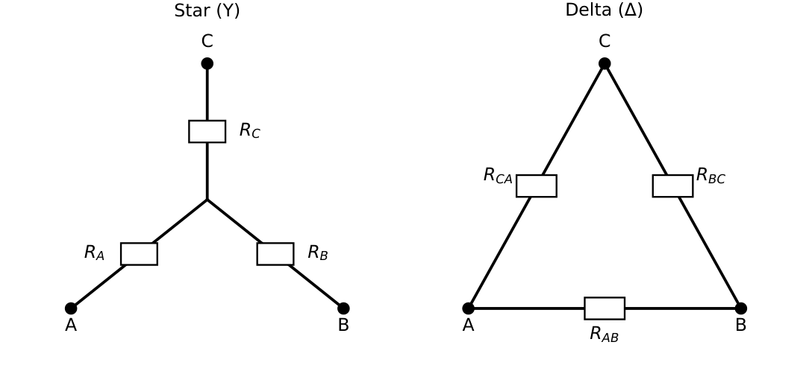
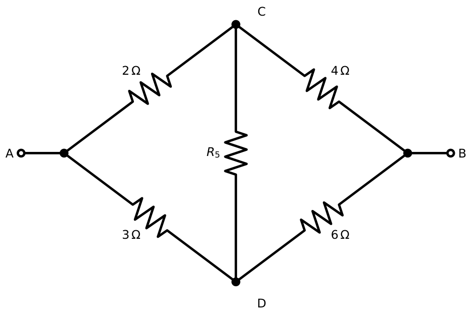
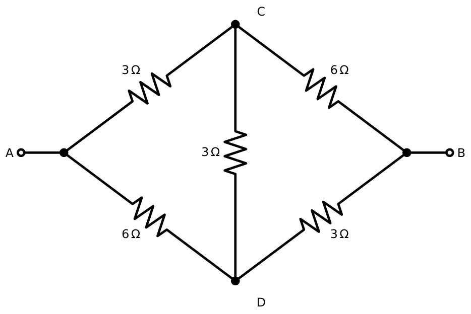
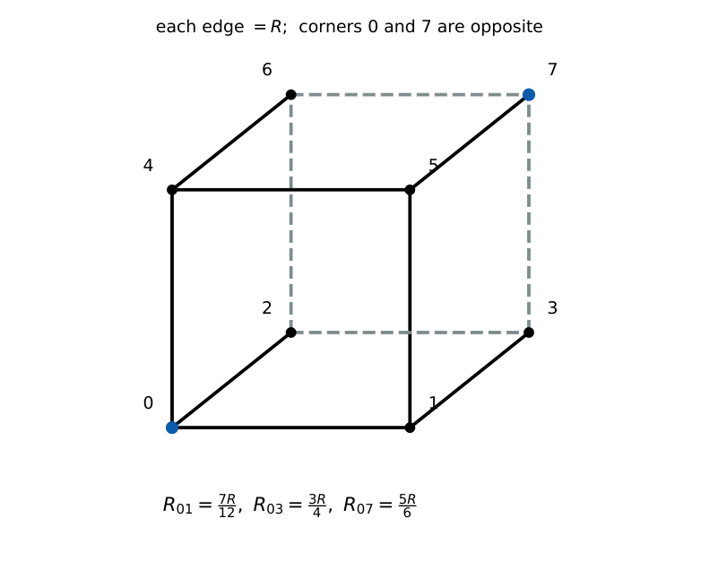
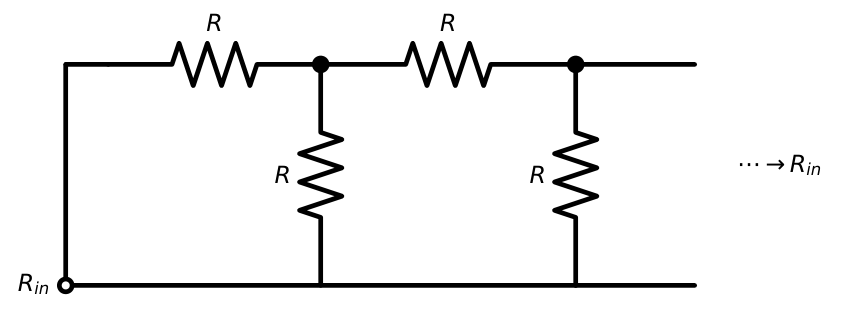

Circuit Transformations
In this chapter
Star–delta conversion, balanced bridges, symmetry (cube, infinite ladders), and equivalent-resistance NAT questions. These are fast if you spot the symmetry and painfully slow if you reach for mesh equations.
5.1 Series–parallel reduction
Start at the far end from the terminals and repeatedly combine series and parallel groups until a single resistance remains. Redraw after each step; a common error is combining resistors that are not actually in series (a third branch touches the junction).
5.2 Source transformation
As in Chapter 1: \((V_s,R_s)\leftrightarrow(I_s=V_s/R_s,R_s)\). Repeated transformation collapses ladders of sources and resistors. Remember that a resistor in series with a current source, or in parallel with a voltage source, can be removed.
5.3 Star (Y) and delta (\(\Delta\)) connections
Three resistors connected at a common point form a star (Y or T); three resistors connected end to end in a loop form a delta (\(\Delta\) or \(\pi\)). The two are equivalent as seen from the three outer terminals A, B, C when the transformation formulas hold (Figure 5.1).

5.4 Wye-to-delta transformation
\(R_{AB}=\dfrac{R_AR_B+R_BR_C+R_CR_A}{R_C}\), \(R_{BC}=\dfrac{R_AR_B+R_BR_C+R_CR_A}{R_A}\), \(R_{CA}=\dfrac{R_AR_B+R_BR_C+R_CR_A}{R_B}\).
Rule: \(R_\Delta=\dfrac{\text{sum of pairwise products of Y resistors}}{\text{Y resistor \emph{opposite} the delta arm}}\).
5.5 Delta-to-wye transformation
\(R_A=\dfrac{R_{AB}R_{CA}}{R_{AB}+R_{BC}+R_{CA}}\), \(R_B=\dfrac{R_{AB}R_{BC}}{R_{AB}+R_{BC}+R_{CA}}\), \(R_C=\dfrac{R_{BC}R_{CA}}{R_{AB}+R_{BC}+R_{CA}}\).
Rule: \(R_Y=\dfrac{\text{product of the two adjacent delta resistors}}{\text{sum of all three delta resistors}}\).
Equate the resistance between each pair of terminals with the third terminal open. Y: \(R_A+R_B\); \(\Delta\): \(R_{AB}\parallel(R_{BC}+R_{CA})\). Setting \(R_A+R_B=\dfrac{R_{AB}(R_{BC}+R_{CA})}{R_{AB}+R_{BC}+R_{CA}}\) and the two analogous equations gives three linear equations whose solution is the set above.
\(\Delta\) with \(R_{AB}=30\ \Omega\), \(R_{BC}=60\ \Omega\), \(R_{CA}=90\ \Omega\) (sum \(180\ \Omega\)).
\(R_A=\dfrac{30\cdot90}{180}=15\ \Omega\), \(R_B=\dfrac{30\cdot60}{180}=10\ \Omega\), \(R_C=\dfrac{60\cdot90}{180}=30\ \Omega\).
5.6 Balanced networks
If all three resistors are equal: \(R_\Delta=3R_Y\) (equivalently \(R_Y=R_\Delta/3\)). A \(\Delta\) of three \(30\ \Omega\) resistors is a Y of three \(10\ \Omega\) resistors.
5.7 Bridge networks
A Wheatstone bridge has arms \(R_1\) (A–C), \(R_2\) (C–B), \(R_3\) (A–D), \(R_4\) (D–B) and a bridge resistor \(R_5\) (C–D). It is balanced when \[\frac{R_1}{R_3}=\frac{R_2}{R_4}\] (the two ratios in the two divider paths are equal), so \(V_C=V_D\) and \(R_5\) carries no current and can be removed (open-circuit) or replaced by a short.


Right figure: \(R_1=3\), \(R_2=6\), \(R_3=6\), \(R_4=3\), \(R_5=3\ \Omega\). Convert the \(\Delta\) (A, C, D) with sides \(R_1=3\) (A–C), \(R_3=6\) (A–D), \(R_5=3\) (C–D) (sum \(12\)): \(R_{AO}=\dfrac{3\cdot6}{12}=1.5\), \(R_{CO}=\dfrac{3\cdot3}{12}=0.75\), \(R_{DO}=\dfrac{6\cdot3}{12}=1.5\ \Omega\).
Now O\(\to\)C\(\to\)B: \(0.75+6=6.75\ \Omega\); O\(\to\)D\(\to\)B: \(1.5+3=4.5\ \Omega\); parallel \(=\dfrac{6.75\times4.5}{11.25}=2.7\ \Omega\).
\(R_{AB}=1.5+2.7=4.2\ \Omega\).
5.8 Symmetry techniques
- Equipotential nodes. Nodes that, by symmetry, must be at the same potential can be joined by a wire without changing the answer.
- Folding. If a network is mirror-symmetric about the line through the two measurement terminals, currents split equally and the network can be folded.
- Cut symmetry. A symmetric network can be split into two halves that are each analysed separately, with the symmetry line’s resistors halved or doubled.
Adjacent corners (along an edge): \(\dfrac{7}{12}R\). Face diagonal: \(\dfrac{3}{4}R\). Body diagonal: \(\dfrac{5}{6}R\).
Feed current \(I\) at corner \(0\) and remove at the opposite corner \(7\). The three neighbours of corner 0 are equipotential, as are the three neighbours of corner 7; merge them. The network becomes three parallel \(R\) (0 to first group), six parallel \(R\) (between the two groups), and three parallel \(R\) (last group): \(\dfrac R3+\dfrac R6+\dfrac R3=\dfrac56R\).

5.9 Infinite ladder
An infinite ladder with series resistance \(R_s\) and shunt resistance \(R_p\) repeated indefinitely has input resistance \(R_{in}\) satisfying (removing one section leaves the same network) \[R_{in}=R_s+\frac{R_pR_{in}}{R_p+R_{in}}\Rightarrow R_{in}^2-R_sR_{in}-R_sR_p=0.\] For \(R_s=R_p=R\): \(R_{in}=\dfrac{1+\sqrt5}{2}R=1.618R\).

5.10 Equivalent resistance problems: a decision table
| If you see | Do this |
|---|---|
| Three resistors meeting at a point with none in series/parallel | Try \(\Delta\)–Y |
| Bridge with two equal ratios | Balanced \(\to\) ignore centre arm |
| Identical resistors on a symmetric solid (cube, tetrahedron) | Equipotential merging |
| Repeating ladder to infinity | Self-similarity equation |
| Resistors joined at a wire (ideal) | Short them out; redraw |
Q1. A balanced \(\Delta\) with each arm \(30\ \Omega\) is converted to Y. Each Y resistor is (A) \(10\ \Omega\) (B) \(30\ \Omega\) (C) \(90\ \Omega\) (D) \(15\ \Omega\).
Q2. A Wheatstone bridge with \(R_1=2\ \Omega\), \(R_2=4\ \Omega\), \(R_3=3\ \Omega\) (A–D) is balanced. \(R_4\) (D–B) is (A) \(2\ \Omega\) (B) \(6\ \Omega\) (C) \(1.5\ \Omega\) (D) \(12\ \Omega\).
Q3. The input resistance of an infinite ladder with series \(1\ \Omega\) and shunt \(1\ \Omega\) is (A) \(1\ \Omega\) (B) \(1.5\ \Omega\) (C) \(1.618\ \Omega\) (D) \(2\ \Omega\).
Answers: Q1 (A). Q2 (B): \(R_1/R_3=R_2/R_4\Rightarrow2/3=4/R_4\). Q3 (C).
Q4. The resistance between A and B of the unbalanced bridge (\(3,6,6,3\) and \(R_5=3\ \Omega\)) is (A) \(3.6\ \Omega\) (B) \(4.2\ \Omega\) (C) \(4.5\ \Omega\) (D) \(6\ \Omega\).
Q5. A cube of twelve \(12\ \Omega\) resistors: the resistance between two adjacent corners is (A) \(7\ \Omega\) (B) \(9\ \Omega\) (C) \(10\ \Omega\) (D) \(12\ \Omega\).
Answers: Q4 (B). Q5 (A): \(7R/12=7\ \Omega\).
Q6. Cube with \(R=8\ \Omega\): resistance across a face diagonal is \(\Omega\).
Q7. In the \(\Delta\) with \(30,60,90\ \Omega\) (\(R_{AB},R_{BC},R_{CA}\)), the equivalent Y resistor at terminal C is \(\Omega\).
Answers: Q6: \(3R/4=6\ \Omega\). Q7: \(30\ \Omega\).
Q8. In a balanced Wheatstone bridge: (A) \(V_C=V_D\) (B) \(R_5\) carries no current (C) \(R_{AB}\) depends on \(R_5\) (D) \(R_1R_4=R_2R_3\).
Answers: Q8: (A), (B), (D). With \(R_1/R_3=R_2/R_4\), cross-multiplication gives \(R_1R_4=R_2R_3\). (C) is false.
(i) Using \(R_Y=R_\Delta/3\) when the network is not balanced. (ii) Mixing up adjacent/opposite resistors in Y\(\leftrightarrow\Delta\). (iii) Combining resistors that are not truly in series/parallel. (iv) Forgetting that ideal wires short out resistors. (v) Using the bridge balance condition with the wrong pairing of arms.
T1. An infinite ladder has series \(2\ \Omega\) and shunt \(2\ \Omega\). Find \(R_{in}\).
T2. Convert a Y of \(6,12,18\ \Omega\) (\(R_A,R_B,R_C\)) to \(\Delta\) and give \(R_{AB}\).
Answers: T1: \(2\times1.618=3.236\ \Omega\). T2: sum of pairwise products \(=72+216+108=396\); \(R_{AB}=396/R_C=396/18=22\ \Omega\).
- Y\(\to\Delta\): \(R_\Delta=\Sigma(\text{pair products})/R_{\text{opposite}}\). \(\Delta\to\)Y: \(R_Y=\text{adjacent product}/\text{sum}\). Balanced: \(R_\Delta=3R_Y\).
- Balanced bridge: \(R_1/R_3=R_2/R_4\); centre arm carries no current.
- Cube (12\(R\)): edge \(7R/12\), face diagonal \(3R/4\), body diagonal \(5R/6\).
- Infinite ladder: \(R_{in}=R_s+R_p\parallel R_{in}\); equal \(R\): \(1.618R\).
- Use symmetry first, \(\Delta\)–Y second, node equations last.